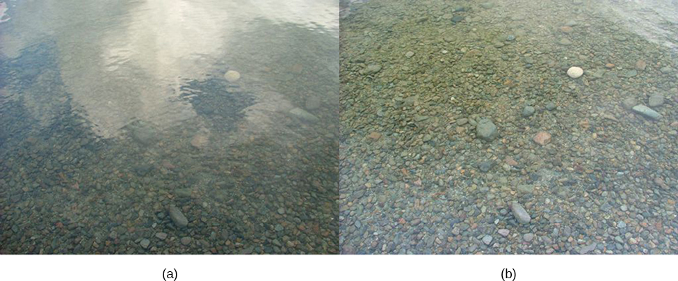
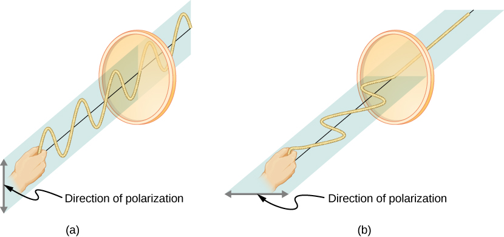
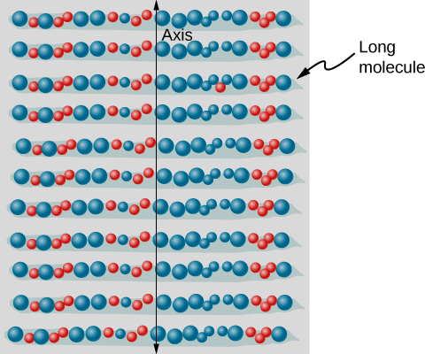
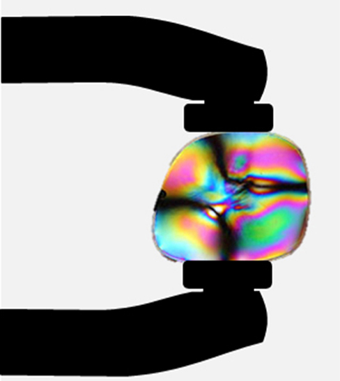
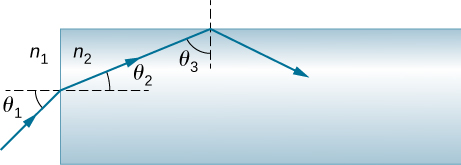

Explain the change in intensity as polarized light passes through a polarizing filter
Calculate the effect of polarization by reflection and Brewster’s angle
Describe the effect of polarization by scattering
Explain the use of polarizing materials in devices such as LCDs
Polarizing sunglasses are familiar to most of us. They have a special ability to cut the glare of light reflected from water or glass ([link]). They have this ability because of a wave characteristic of light called polarization. What is polarization? How is it produced? What are some of its uses? The answers to these questions are related to the wave character of light.
These two photographs of a river show the effect of a polarizing filter in reducing glare in light reflected from the surface of water. Part (b) of this figure was taken with a polarizing filter and part (a) was not. As a result, the reflection of clouds and sky observed in part (a) is not observed in part (b). Polarizing sunglasses are particularly useful on snow and water. (credit a and credit b: modifications of work by “Amithshs”/Wikimedia Commons)

Malus’s Law
Light is one type of electromagnetic (EM) wave. As noted in the previous chapter on Electromagnetic Waves, EM waves are transverse waves consisting of varying electric and magnetic fields that oscillate perpendicular to the direction of propagation ([link]). However, in general, there are no specific directions for the oscillations of the electric and magnetic fields; they vibrate in any randomly oriented plane perpendicular to the direction of propagation. Polarization is the attribute that a wave’s oscillations do have a definite direction relative to the direction of propagation of the wave. (This is not the same type of polarization as that discussed for the separation of charges.) Waves having such a direction are said to be polarized. For an EM wave, we define the direction of polarization to be the direction parallel to the electric field. Thus, we can think of the electric field arrows as showing the direction of polarization, as in [link].
An EM wave, such as light, is a transverse wave. The electric and magnetic fields are perpendicular to the direction of propagation. The direction of polarization of the wave is the direction of the electric field.
To examine this further, consider the transverse waves in the ropes shown in [link]. The oscillations in one rope are in a vertical plane and are said to be vertically polarized. Those in the other rope are in a horizontal plane and are horizontally polarized. If a vertical slit is placed on the first rope, the waves pass through. However, a vertical slit blocks the horizontally polarized waves. For EM waves, the direction of the electric field is analogous to the disturbances on the ropes.
The transverse oscillations in one rope (a) are in a vertical plane, and those in the other rope (b) are in a horizontal plane. The first is said to be vertically polarized, and the other is said to be horizontally polarized. Vertical slits pass vertically polarized waves and block horizontally polarized waves.

The Sun and many other light sources produce waves that have the electric fields in random directions ([link](a)). Such light is said to be unpolarized, because it is composed of many waves with all possible directions of polarization. Polaroid materials—which were invented by the founder of the Polaroid Corporation, Edwin Land—act as a polarizing slit for light, allowing only polarization in one direction to pass through. Polarizing filters are composed of long molecules aligned in one direction. If we think of the molecules as many slits, analogous to those for the oscillating ropes, we can understand why only light with a specific polarization can get through. The axis of a polarizing filter is the direction along which the filter passes the electric field of an EM wave.
The slender arrow represents a ray of unpolarized light. The bold arrows represent the direction of polarization of the individual waves composing the ray. (a) If the light is unpolarized, the arrows point in all directions. (b) A polarizing filter has a polarization axis that acts as a slit passing through electric fields parallel to its direction. The direction of polarization of an EM wave is defined to be the direction of its electric field.
[link] shows the effect of two polarizing filters on originally unpolarized light. The first filter polarizes the light along its axis. When the axes of the first and second filters are aligned (parallel), then all of the polarized light passed by the first filter is also passed by the second filter. If the second polarizing filter is rotated, only the component of the light parallel to the second filter’s axis is passed. When the axes are perpendicular, no light is passed by the second filter.
The effect of rotating two polarizing filters, where the first polarizes the light. (a) All of the polarized light is passed by the second polarizing filter, because its axis is parallel to the first. (b) As the second filter is rotated, only part of the light is passed. (c) When the second filter is perpendicular to the first, no light is passed. (d) In this photograph, a polarizing filter is placed above two others. Its axis is perpendicular to the filter on the right (dark area) and parallel to the filter on the left (lighter area). (credit d: modification of work by P.P. Urone)
Only the component of the EM wave parallel to the axis of a filter is passed. Let us call the angle between the direction of polarization and the axis of a filter . If the electric field has an amplitude E, then the transmitted part of the wave has an amplitude ([link]). Since the intensity of a wave is proportional to its amplitude squared, the intensity I of the transmitted wave is related to the incident wave by
where is the intensity of the polarized wave before passing through the filter. This equation is known as Malus’s law.
A polarizing filter transmits only the component of the wave parallel to its axis, reducing the intensity of any light not polarized parallel to its axis.
This Open Source Physics animation helps you visualize the electric field vectors as light encounters a polarizing filter. You can rotate the filter—note that the angle displayed is in radians. You can also rotate the animation for 3D visualization.
Calculating Intensity Reduction by a Polarizing Filter
What angle is needed between the direction of polarized light and the axis of a polarizing filter to reduce its intensity by ?
Strategy
When the intensity is reduced by , it is or 0.100 times its original value. That is, Using this information, the equation can be used to solve for the needed angle.
Solution
Solving the equation for and substituting with the relationship between I and gives
Solving for yields
Significance
A fairly large angle between the direction of polarization and the filter axis is needed to reduce the intensity to of its original value. This seems reasonable based on experimenting with polarizing films. It is interesting that at an angle of , the intensity is reduced to of its original value. Note that is from reducing the intensity to zero, and that at an angle of , the intensity is reduced to of its original value, giving evidence of symmetry.
Check Your Understanding Although we did not specify the direction in [link], let’s say the polarizing filter was rotated clockwise by to reduce the light intensity by . What would be the intensity reduction if the polarizing filter were rotated counterclockwise by ?
also
Polarization by Reflection
By now, you can probably guess that polarizing sunglasses cut the glare in reflected light, because that light is polarized. You can check this for yourself by holding polarizing sunglasses in front of you and rotating them while looking at light reflected from water or glass. As you rotate the sunglasses, you will notice the light gets bright and dim, but not completely black. This implies the reflected light is partially polarized and cannot be completely blocked by a polarizing filter.
[link] illustrates what happens when unpolarized light is reflected from a surface. Vertically polarized light is preferentially refracted at the surface, so the reflected light is left more horizontally polarized. The reasons for this phenomenon are beyond the scope of this text, but a convenient mnemonic for remembering this is to imagine the polarization direction to be like an arrow. Vertical polarization is like an arrow perpendicular to the surface and is more likely to stick and not be reflected. Horizontal polarization is like an arrow bouncing on its side and is more likely to be reflected. Sunglasses with vertical axes thus block more reflected light than unpolarized light from other sources.
Polarization by reflection. Unpolarized light has equal amounts of vertical and horizontal polarization. After interaction with a surface, the vertical components are preferentially absorbed or refracted, leaving the reflected light more horizontally polarized. This is akin to arrows striking on their sides and bouncing off, whereas arrows striking on their tips go into the surface.
Since the part of the light that is not reflected is refracted, the amount of polarization depends on the indices of refraction of the media involved. It can be shown that reflected light is completely polarized at an angle of reflection given by
where is the medium in which the incident and reflected light travel and is the index of refraction of the medium that forms the interface that reflects the light. This equation is known as Brewster’s law and is known as Brewster’s angle, named after the nineteenth-century Scottish physicist who discovered them.
This Open Source Physics animation shows incident, reflected, and refracted light as rays and EM waves. Try rotating the animation for 3D visualization and also change the angle of incidence. Near Brewster’s angle, the reflected light becomes highly polarized.
Calculating Polarization by Reflection
(a) At what angle will light traveling in air be completely polarized horizontally when reflected from water? (b) From glass?
Strategy
All we need to solve these problems are the indices of refraction. Air has water has and crown glass has The equation can be directly applied to find in each case.
Solution
Putting the known quantities into the equation
gives
Solving for the angle yields
Similarly, for crown glass and air,
Thus,
Significance
Light reflected at these angles could be completely blocked by a good polarizing filter held with its axis vertical. Brewster’s angle for water and air are similar to those for glass and air, so that sunglasses are equally effective for light reflected from either water or glass under similar circumstances. Light that is not reflected is refracted into these media. Therefore, at an incident angle equal to Brewster’s angle, the refracted light is slightly polarized vertically. It is not completely polarized vertically, because only a small fraction of the incident light is reflected, so a significant amount of horizontally polarized light is refracted.
Check Your Understanding What happens at Brewster’s angle if the original incident light is already vertically polarized?
There will be only refraction but no reflection.
Atomic Explanation of Polarizing Filters
Polarizing filters have a polarization axis that acts as a slit. This slit passes EM waves (often visible light) that have an electric field parallel to the axis. This is accomplished with long molecules aligned perpendicular to the axis, as shown in [link].
Long molecules are aligned perpendicular to the axis of a polarizing filter. In an EM wave, the component of the electric field perpendicular to these molecules passes through the filter, whereas the component parallel to the molecules is absorbed.

[link] illustrates how the component of the electric field parallel to the long molecules is absorbed. An EM wave is composed of oscillating electric and magnetic fields. The electric field is strong compared with the magnetic field and is more effective in exerting force on charges in the molecules. The most affected charged particles are the electrons, since electron masses are small. If an electron is forced to oscillate, it can absorb energy from the EM wave. This reduces the field in the wave and, hence, reduces its intensity. In long molecules, electrons can more easily oscillate parallel to the molecule than in the perpendicular direction. The electrons are bound to the molecule and are more restricted in their movement perpendicular to the molecule. Thus, the electrons can absorb EM waves that have a component of their electric field parallel to the molecule. The electrons are much less responsive to electric fields perpendicular to the molecule and allow these fields to pass. Thus, the axis of the polarizing filter is perpendicular to the length of the molecule.
Diagram of an electron in a long molecule oscillating parallel to the molecule. The oscillation of the electron absorbs energy and reduces the intensity of the component of the EM wave that is parallel to the molecule.
Polarization by Scattering
If you hold your polarizing sunglasses in front of you and rotate them while looking at blue sky, you will see the sky get bright and dim. This is a clear indication that light scattered by air is partially polarized. [link] helps illustrate how this happens. Since light is a transverse EM wave, it vibrates the electrons of air molecules perpendicular to the direction that it is traveling. The electrons then radiate like small antennae. Since they are oscillating perpendicular to the direction of the light ray, they produce EM radiation that is polarized perpendicular to the direction of the ray. When viewing the light along a line perpendicular to the original ray, as in the figure, there can be no polarization in the scattered light parallel to the original ray, because that would require the original ray to be a longitudinal wave. Along other directions, a component of the other polarization can be projected along the line of sight, and the scattered light is only partially polarized. Furthermore, multiple scattering can bring light to your eyes from other directions and can contain different polarizations.
Polarization by scattering. Unpolarized light scattering from air molecules shakes their electrons perpendicular to the direction of the original ray. The scattered light therefore has a polarization perpendicular to the original direction and none parallel to the original direction.
Photographs of the sky can be darkened by polarizing filters, a trick used by many photographers to make clouds brighter by contrast. Scattering from other particles, such as smoke or dust, can also polarize light. Detecting polarization in scattered EM waves can be a useful analytical tool in determining the scattering source.
A range of optical effects are used in sunglasses. Besides being polarizing, sunglasses may have colored pigments embedded in them, whereas others use either a nonreflective or reflective coating. A recent development is photochromic lenses, which darken in the sunlight and become clear indoors. Photochromic lenses are embedded with organic microcrystalline molecules that change their properties when exposed to UV in sunlight, but become clear in artificial lighting with no UV.
Liquid Crystals and Other Polarization Effects in Materials
Although you are undoubtedly aware of liquid crystal displays (LCDs) found in watches, calculators, computer screens, cellphones, flat screen televisions, and many other places, you may not be aware that they are based on polarization. Liquid crystals are so named because their molecules can be aligned even though they are in a liquid. Liquid crystals have the property that they can rotate the polarization of light passing through them by . Furthermore, this property can be turned off by the application of a voltage, as illustrated in [link]. It is possible to manipulate this characteristic quickly and in small, well-defined regions to create the contrast patterns we see in so many LCD devices.
In flat screen LCD televisions, a large light is generated at the back of the TV. The light travels to the front screen through millions of tiny units called pixels (picture elements). One of these is shown in [link](a) and (b). Each unit has three cells, with red, blue, or green filters, each controlled independently. When the voltage across a liquid crystal is switched off, the liquid crystal passes the light through the particular filter. We can vary the picture contrast by varying the strength of the voltage applied to the liquid crystal.
(a) Polarized light is rotated by a liquid crystal and then passed by a polarizing filter that has its axis perpendicular to the direction of the original polarization. (b) When a voltage is applied to the liquid crystal, the polarized light is not rotated and is blocked by the filter, making the region dark in comparison with its surroundings. (c) LCDs can be made color specific, small, and fast enough to use in laptop computers and TVs. (credit c: modification of work by Jane Whitney)
Many crystals and solutions rotate the plane of polarization of light passing through them. Such substances are said to be optically active. Examples include sugar water, insulin, and collagen ([link]). In addition to depending on the type of substance, the amount and direction of rotation depend on several other factors. Among these is the concentration of the substance, the distance the light travels through it, and the wavelength of light. Optical activity is due to the asymmetrical shape of molecules in the substance, such as being helical. Measurements of the rotation of polarized light passing through substances can thus be used to measure concentrations, a standard technique for sugars. It can also give information on the shapes of molecules, such as proteins, and factors that affect their shapes, such as temperature and pH.
Optical activity is the ability of some substances to rotate the plane of polarization of light passing through them. The rotation is detected with a polarizing filter or analyzer.
Glass and plastic become optically active when stressed: the greater the stress, the greater the effect. Optical stress analysis on complicated shapes can be performed by making plastic models of them and observing them through crossed filters, as seen in [link]. It is apparent that the effect depends on wavelength as well as stress. The wavelength dependence is sometimes also used for artistic purposes.
Optical stress analysis of a plastic lens placed between crossed polarizers. (credit: “Infopro”/Wikimedia Commons)

Another interesting phenomenon associated with polarized light is the ability of some crystals to split an unpolarized beam of light into two polarized beams. This occurs because the crystal has one value for the index of refraction of polarized light but a different value for the index of refraction of light polarized in the perpendicular direction, so that each component has its own angle of refraction. Such crystals are said to be birefringent, and, when aligned properly, two perpendicularly polarized beams will emerge from the crystal ([link]). Birefringent crystals can be used to produce polarized beams from unpolarized light. Some birefringent materials preferentially absorb one of the polarizations. These materials are called dichroic and can produce polarization by this preferential absorption. This is fundamentally how polarizing filters and other polarizers work.
Birefringent materials, such as the common mineral calcite, split unpolarized beams of light into two with two different values of index of refraction.
Summary
Polarization is the attribute that wave oscillations have a definite direction relative to the direction of propagation of the wave. The direction of polarization is defined to be the direction parallel to the electric field of the EM wave.
Unpolarized light is composed of many rays having random polarization directions.
Unpolarized light can be polarized by passing it through a polarizing filter or other polarizing material. The process of polarizing light decreases its intensity by a factor of 2.
The intensity, I, of polarized light after passing through a polarizing filter is , where is the incident intensity and is the angle between the direction of polarization and the axis of the filter.
Polarization is also produced by reflection.
Brewster’s law states that reflected light is completely polarized at the angle of reflection , known as Brewster’s angle.
Polarization can also be produced by scattering.
Several types of optically active substances rotate the direction of polarization of light passing through them.
Key Equations
Speed of light
Index of refraction
Law of reflection
Law of refraction (Snell’s law)
Critical angle
Malus’s law
Brewster’s law
Conceptual Questions
Can a sound wave in air be polarized? Explain.
No. Sound waves are not transverse waves.
No light passes through two perfect polarizing filters with perpendicular axes. However, if a third polarizing filter is placed between the original two, some light can pass. Why is this? Under what circumstances does most of the light pass?
Explain what happens to the energy carried by light that it is dimmed by passing it through two crossed polarizing filters.
Energy is absorbed into the filters.
When particles scattering light are much smaller than its wavelength, the amount of scattering is proportional to . Does this mean there is more scattering for small than large ? How does this relate to the fact that the sky is blue?
Using the information given in the preceding question, explain why sunsets are red.
Sunsets are viewed with light traveling straight from the Sun toward us. When blue light is scattered out of this path, the remaining red light dominates the overall appearance of the setting Sun.
When light is reflected at Brewster’s angle from a smooth surface, it is polarized parallel to the surface. Part of the light will be refracted into the surface. Describe how you would do an experiment to determine the polarization of the refracted light. What direction would you expect the polarization to have and would you expect it to be ?
If you lie on a beach looking at the water with your head tipped slightly sideways, your polarized sunglasses do not work very well. Why not?
The axis of polarization for the sunglasses has been rotated .
Problems
What angle is needed between the direction of polarized light and the axis of a polarizing filter to cut its intensity in half?
The angle between the axes of two polarizing filters is . By how much does the second filter reduce the intensity of the light coming through the first?
0.500
Two polarizing sheets and are placed together with their transmission axes oriented at an angle to each other. What is when only of the maximum transmitted light intensity passes through them?
Suppose that in the preceding problem the light incident on is unpolarized. At the determined value of , what fraction of the incident light passes through the combination?
0.125 or 1/8
If you have completely polarized light of intensity , what will its intensity be after passing through a polarizing filter with its axis at an angle to the light’s polarization direction?
What angle would the axis of a polarizing filter need to make with the direction of polarized light of intensity to reduce the intensity to ?
At the end of [link], it was stated that the intensity of polarized light is reduced to of its original value by passing through a polarizing filter with its axis at an angle of to the direction of polarization. Verify this statement.
Show that if you have three polarizing filters, with the second at an angle of to the first and the third at an angle of to the first, the intensity of light passed by the first will be reduced to of its value. (This is in contrast to having only the first and third, which reduces the intensity to zero, so that placing the second between them increases the intensity of the transmitted light.)
Three polarizing sheets are placed together such that the transmission axis of the second sheet is oriented at to the axis of the first, whereas the transmission axis of the third sheet is oriented at (in the same sense) to the axis of the first. What fraction of the intensity of an incident unpolarized beam is transmitted by the combination?
In order to rotate the polarization axis of a beam of linearly polarized light by , a student places sheets and with their transmission axes at and , respectively, to the beam’s axis of polarization. (a) What fraction of the incident light passes through and (b) through the combination? (c) Repeat your calculations for part (b) for transmission-axis angles of and , respectively.
a. 0.500; b. 0.250; c. 0.187
It is found that when light traveling in water falls on a plastic block, Brewster’s angle is . What is the refractive index of the plastic?
At what angle will light reflected from diamond be completely polarized?
What is Brewster’s angle for light traveling in water that is reflected from crown glass?
A scuba diver sees light reflected from the water’s surface. At what angle relative to the water’s surface will this light be completely polarized?
Additional Problems
From his measurements, Roemer estimated that it took 22 min for light to travel a distance equal to the diameter of Earth’s orbit around the Sun. (a) Use this estimate along with the known diameter of Earth’s orbit to obtain a rough value of the speed of light. (b) Light actually takes 16.5 min to travel this distance. Use this time to calculate the speed of light.
Cornu performed Fizeau’s measurement of the speed of light using a wheel of diameter 4.00 cm that contained 180 teeth. The distance from the wheel to the mirror was 22.9 km. Assuming he measured the speed of light accurately, what was the angular velocity of the wheel?
114 radian/s
Suppose you have an unknown clear substance immersed in water, and you wish to identify it by finding its index of refraction. You arrange to have a beam of light enter it at an angle of , and you observe the angle of refraction to be . What is the index of refraction of the substance and its likely identity?
Shown below is a ray of light going from air through crown glass into water, such as going into a fish tank. Calculate the amount the ray is displaced by the glass given that the incident angle is and the glass is 1.00 cm thick.
3.72 mm
Considering the previous problem, show that is the same as it would be if the second medium were not present.
At what angle is light inside crown glass completely polarized when reflected from water, as in a fish tank?
Light reflected at from a window is completely polarized. What is the window’s index of refraction and the likely substance of which it is made?
(a) Light reflected at from a gemstone in a ring is completely polarized. Can the gem be a diamond? (b) At what angle would the light be completely polarized if the gem was in water?
a. 1.92. The gem is not a diamond (it is zircon). b.
If is Brewster’s angle for light reflected from the top of an interface between two substances, and is Brewster’s angle for light reflected from below, prove that .
Unreasonable results Suppose light travels from water to another substance, with an angle of incidence of and an angle of refraction of . (a) What is the index of refraction of the other substance? (b) What is unreasonable about this result? (c) Which assumptions are unreasonable or inconsistent?
a. 0.898; b. We cannot have , since this would imply a speed greater than c. c. The refracted angle is too big relative to the angle of incidence.
Unreasonable results Light traveling from water to a gemstone strikes the surface at an angle of and has an angle of refraction of . (a) What is the speed of light in the gemstone? (b) What is unreasonable about this result? (c) Which assumptions are unreasonable or inconsistent?
If a polarizing filter reduces the intensity of polarized light to of its original value, by how much are the electric and magnetic fields reduced?
Suppose you put on two pairs of polarizing sunglasses with their axes at an angle of . How much longer will it take the light to deposit a given amount of energy in your eye compared with a single pair of sunglasses? Assume the lenses are clear except for their polarizing characteristics.
(a) On a day when the intensity of sunlight is , a circular lens 0.200 m in diameter focuses light onto water in a black beaker. Two polarizing sheets of plastic are placed in front of the lens with their axes at an angle of . Assuming the sunlight is unpolarized and the polarizers are efficient, what is the initial rate of heating of the water in , assuming it is absorbed? The aluminum beaker has a mass of 30.0 grams and contains 250 grams of water. (b) Do the polarizing filters get hot? Explain.
a. ; b. yes
Challenge Problems
Light shows staged with lasers use moving mirrors to swing beams and create colorful effects. Show that a light ray reflected from a mirror changes direction by when the mirror is rotated by an angle .
Consider sunlight entering Earth’s atmosphere at sunrise and sunset—that is, at a incident angle. Taking the boundary between nearly empty space and the atmosphere to be sudden, calculate the angle of refraction for sunlight. This lengthens the time the Sun appears to be above the horizon, both at sunrise and sunset. Now construct a problem in which you determine the angle of refraction for different models of the atmosphere, such as various layers of varying density. Your instructor may wish to guide you on the level of complexity to consider and on how the index of refraction varies with air density.
First part: . The remainder depends on the complexity of the solution the reader constructs.
A light ray entering an optical fiber surrounded by air is first refracted and then reflected as shown below. Show that if the fiber is made from crown glass, any incident ray will be totally internally reflected.

A light ray falls on the left face of a prism (see below) at the angle of incidence for which the emerging beam has an angle of refraction at the right face. Show that the index of refraction n of the glass prism is given by
where is the vertex angle of the prism and is the angle through which the beam has been deviated. If and the base angles of the prism are each what is n?
proof; 1.33
If the apex angle in the previous problem is and , what is the value of ?
The light incident on polarizing sheet is linearly polarized at an angle of with respect to the transmission axis of . Sheet is placed so that its axis is parallel to the polarization axis of the incident light, that is, also at with respect to . (a) What fraction of the incident light passes through ? (b) What fraction of the incident light is passed by the combination? (c) By rotating , a maximum in transmitted intensity is obtained. What is the ratio of this maximum intensity to the intensity of transmitted light when is at with respect to ?
a. 0.750; b. 0.563; c. 1.33
Prove that if I is the intensity of light transmitted by two polarizing filters with axes at an angle and is the intensity when the axes are at an angle then the original intensity. (Hint: Use the trigonometric identities and
Glossary
birefringent
refers to crystals that split an unpolarized beam of light into two beams
Brewster’s angle
angle of incidence at which the reflected light is completely polarized
Brewster’s law
, where is the medium in which the incident and reflected light travel and is the index of refraction of the medium that forms the interface that reflects the light
direction of polarization
direction parallel to the electric field for EM waves
horizontally polarized
oscillations are in a horizontal plane
Malus’s law
where is the intensity of the polarized wave before passing through the filter
optically active
substances that rotate the plane of polarization of light passing through them
polarization
attribute that wave oscillations have a definite direction relative to the direction of propagation of the wave
polarized
refers to waves having the electric and magnetic field oscillations in a definite direction
![A part of an electromagnetic wave moving with velocity c is shown at one instant in time. The two vector components, E and B, are shown and are perpendicular to one another and to the direction of propagation. The vectors representing the magnitude and direction of E, shown as arrows whose tails lie on the line of propagation of the wave, form a sine wave in one plane. Similarly, the B vectors form a sine wave in a plane perpendicular to the E wave. The E and B waves are in phase. The direction of polarization is given by the direction of the E vectors.](CNX_UPhysics_34_07_EMWave.jpg)
![Figure a shows a slender blue arrow pointing out of the page and to the right that is labeled direction of ray. Eight red arrows emanate from a point on the ray and are labeled as vectors E. These arrows are all in a plane perpendicular to the ray and are uniformly distributed around the ray. They are labeled as representing a random polarization. In figure b, a similar but longer ray is shown with the same red arrows emanating from a point near the left end of the ray. Farther to the right on the same ray is a thin rectangle with six equally spaced vertical slits. This rectangle is labeled polarizing filter. A vertical double headed arrow on its surface is labeled axis. To the right of the filter, centered on the ray, is a single blue double headed arrow oriented vertically that is labeled E and direction of polarization.](CNX_UPhysics_34_07_PolFilter_New.jpg)
![This figure shows three illustrations of randomly polarized light passing through two polarizing filters, one after the other, in various orientations. In figure a, the two filters have axes oriented parallel to each other, in b the axis of the second filter is at an intermediate angle, between zero and ninety degrees, to the first’s, and in c the axis of the second filter is perpendicular to the first’s. Figure d is a photograph of the actual result of the first (parallel) and last (perpendicular) arrangements. In all the arrangements, the source light is randomly polarized, indicated by vector E arrows pointing in every direction in a plane perpendicular to the direction of propagation of the ray. In all the arrangements, the light that passed through the first filter, whose axis is oriented vertically, is vertically polarized, indicated by E vector arrows that only point vertically up and down. In figure a, all of the polarized light is passed by the second polarizing filter, whose axis is parallel to the first, and is still vertically polarized. In figure b, only some of the light is passed by the second polarizing filter, whose axis is tilted relative to the first. The light that passed the second filter is polarized in the direction of the second filter’s axis, and the magnitude of E is reduced. In figure c, where the filter axes are perpendicular to each other, none of the light passes through the second filter. Figure c shows a photo of three circular optical filters placed over a bright colorful pattern. Two of these filters are place next to each other and the third is placed on top of the other two so that the center of the third is at the point where the edges of the two filters underneath touch. Some light passes through where the upper filter overlaps the left-hand underneath filter. No light passes through where the upper filter overlaps the right-hand lower filter.](CNX_UPhysics_34_07_RotateFilt_New.jpg)
![This figure provides additional details to the schematics of the two previous figures. In this figure, only one of the E vectors of the randomly polarized source light are shown to the left of the vertically oriented polarizing filter, along with the component of that vector parallel to the filter. The vector E is at an angle of theta to the vertical. The vertical component of the E vector is E cosine theta. After passing through the filter, the light has only vertical E, with magnitude E cosine theta.](CNX_UPhysics_34_07_PolFilter2_New.jpg)
![The figure is a diagram that shows a block of glass in air. The reflecting surface is horizontal. A ray labeled unpolarized light starts at the upper left and hits the center of the block, at an angle theta one to the vertical. Centered on this incident ray is are two double headed arrows, one horizontal and the other vertical. From the point where this ray hits the glass block, two rays emerge. One is the reflected ray that goes up and to the right at an angle of theta one to the vertical, and the second is a refracted ray that goes down and to the right at an angle of theta two to the vertical. The reflected light is labeled as partially polarized parallel to the surface. Two double headed arrows, similar to those on the incident ray, are shown centered on the reflected ray, but the vertical arrow is significantly shorter than the horizontal one. The refracted ray is labeled as partially polarized perpendicular to the surface. Two double headed arrows, similar to those on the incident ray, are shown centered on the reflected ray, but the horizontal arrow is significantly shorter than the vertical one. A note indicates that when theta one equals Brewster’s angle, the angle between the reflected and refracted ray is ninety degrees.](CNX_UPhysics_34_07_PolByRef.jpg)
![Figure a shows a drawing of a long molecule. An electromagnetic wave goes through the molecule. The wave propagation direction is perpendicular to the molecular axis and the oscillations of the wave are parallel to the molecular axis. Electrons oscillate parallel to the length of the molecule. After passing the long molecule, the amplitude of the oscillations of the wave is significantly reduced. Figure b shows a similar drawing, except that the wave oscillates perpendicular to the axis of the long molecule. The electrons oscillate weakly perpendicular to the length of the molecule. After passing the long molecule, the magnitude of the oscillation of the EM wave is unchanged.](CNX_UPhysics_34_07_ElectrMol.jpg)
![The figure illustrates the scattering of unpolarized light by a molecule. As usual, the rays are represented by straight blue arrows and the electric field directions by double headed red arrows. The unpolarized incident light has electric field vectors oscillating in all directions in the plane perpendicular to the direction of the propagation of the light rays. The molecule scatters the light in all directions. Light that is scattered in the same direction as the incident light remains unpolarized. Light scattered in the direction perpendicular to the direction as the incident light is polarized perpendicular to the plane defined by the incident and the scattered rays. Light that is scattered in an intermediate direction is partially polarized. The electric field perpendicular to the plane has a larger amplitude than the field parallel to the incident ray.](CNX_UPhysics_34_07_Scattering.jpg)
![Figure a is an illustration of a ray of initially unpolarized light going through a vertical polarizer, then an element labeled L C D no voltage ninety degree rotation, and finally a horizontal polarizer. The initially unpolarized light becomes vertically polarized after the vertical polarizer, then is rotated ninety degrees by the L C D element so that it is horizontally polarized, then it passes through the horizontal polarizer. Figure b is the same except that the L C D element is labeled voltage on, no rotation. The light coming out of the L C D element is thus vertically polarized and does not pass through the horizontal polarizer, making the region at this location dark. Finally, in figure c, a photograph is shown of a laptop computer that is open so that you can see its screen, which is on and has some icons and windows visible.](CNX_UPhysics_34_07_Laptop.jpg)
![The figure shows an initially unpolarized ray of light that passes through three optical elements. The first is a vertical polarizing filter, so the electric field is vertical after the ray passes through it. Next comes a block that is labeled optically active substance. The electric field comes out of the block rotated by an angle theta with respect to the vertical. Finally, the ray passes through another vertical polarizer that is labeled analyzer. The final electric field is vertically polarized again.](CNX_UPhysics_34_07_OptAvail.jpg)
![The figure shows a horizontal, unpolarized ray of light incident on a block labeled birefringent crystal. The ray is perpendicular to the face of the crystal where it enters it. The incident ray splits into two rays when it enters the crystal. One part of the ray continues straight on. This ray is horizontally polarized. The other part of the ray propagates at an. This ray is vertically polarized. The second ray refracts upon leaving the crystal such that the two rays are parallel outside the crystal. The rays are labeled as two perpendicularly polarized beams.](CNX_UPhysics_34_07_Birefringe.jpg)
![The figure illustrates refraction occurring when light travels from medium n 1 to n 3 through an intermediate medium n 2. The incident ray makes an angle theta 1 with a perpendicular drawn at the point of incidence at the interface between n 1 and n 2. The light ray entering n 2 bends towards the perpendicular line making an angle theta 2 with it on the n 2 side. The ray arrives at the interface between n 2 and n 3 at an angle of theta 2 to a perpendicular drawn at the point of incidence at this interface, and the transmitted ray bends away from the perpendicular, making an angle of theta three to the perpendicular on the n 3 side. A straight line extrapolation of the original incident ray is shown as a dotted line. This line is parallel to the refracted ray in the third medium, n 3, and is shifted a distance delta x from the refracted ray. The extrapolated ray is at the same angle theta three to the perpendicular in medium n 3 as the refracted ray.](CNX_UPhysics_34_03_RayofLight_img.jpg)